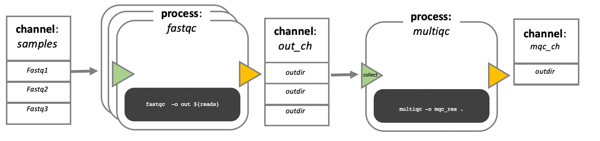

Day 3: Nextflow! Finally, no more running one script after another by hand.
Why a workflow manager? Oh Why?
In bioinformatics you usually end up with one script per tool, and you run them one by one. That whole chain is a workflow (or pipeline). It gets old fast, especially with lots of samples that all need different amounts of compute.
A workflow manager turns your scripts into one automated pipeline. One command and it:
- runs everything in the right order
- keeps an eye on the jobs
- moves files between steps
- re-runs whatever failed
Bonus: pipelines are portable, reproducible, easier to install (especially with containers) and don’t waste time between steps.
There are two big ones, Snakemake and Nextflow. We’re doing Nextflow.

Nextflow in a nutshell
- Scripts become processes, connected by channels (the data flowing in and out).
- The workflow block says what runs in which order.
- A process can run any language, so you can reuse old scripts.
- Same pipeline on a laptop, an HPC cluster or the cloud. Only the config changes.
- Works with git and containers (Apptainer, Docker).
- Develop on a few samples, then scale to hundreds.
- If something breaks, it can resume from the failed step instead of starting over.
A process looks roughly like this (pseudo-code, don’t run it):
process PROCESS_NAME {
container
input:
data x
script:
task1
task2
output:
output x
}First workflow
Start from a pixi environment (see Day 2):
#| eval: false
pixi init -c conda-forge -c biocondaThen put this in hello.nf:
#!/usr/bin/env nextflow
params.greeting = 'Hello world!'
process SPLITLETTERS {
input:
val x
output:
path 'chunk_*'
script:
"""
printf '$x' | split -b 6 - chunk_
"""
}
process CONVERTTOUPPER {
input:
path y
output:
stdout
script:
"""
cat $y | tr '[a-z]' '[A-Z]'
"""
}
workflow {
greeting_ch = Channel.of(params.greeting)
letters_ch = SPLITLETTERS(greeting_ch)
results_ch = CONVERTTOUPPER(letters_ch.flatten())
results_ch.view{ it }
}#| eval: false
pixi run nextflow run hello.nfOutput (the order can flip, because the two CONVERTTOUPPER tasks run at the same time):
executor > local (3)
[96/fd5f07] SPLITLETTERS (1) [100%] 1 of 1 ✔
[7e/dad424] CONVERTTOUPPER (2) [100%] 2 of 2 ✔
HELLO
WORLD!Changed something small and don’t want to redo everything? Add -resume:
#| eval: false
pixi run nextflow run hello.nf -resumeParameters live under params. (like params.greeting) and can be overridden on the command line with --greeting.
To check and clean up old runs:
#| eval: false
pixi run nextflow log
pixi run nextflow clean -f
pixi run nextflow clean -before <RUN NAME> -fThe RNA-seq pipeline
Three tools:
- Salmon: quantifies transcripts from RNA-seq reads
- FastQC: quality control of the raw reads
- MultiQC: collects all the logs into one HTML report
And the order makes sense once you see why:
- Index the transcriptome (
salmon index). Salmon needs a searchable index, not a plain FASTA. Done once, reused by every sample. - Quantify (
salmon quant). Maps each read pair against the index and estimates how much of each transcript is there. - FastQC. Runs alongside quantification, since QC doesn’t depend on the counting.
- MultiQC. Waits for everything, then gives one report instead of dozens of files.
Config
Everything about where the pipeline runs goes in nextflow.config:
process {
executor = 'slurm'
time = 2.h
cpus = 4
}
resume = true
singularity.enabled = true
executor {
account = 'your_project_account'
}So: everything goes to slurm, resume is always on (no more -resume), Singularity is enabled for containers, and the account is whatever your allocation ID is. Nextflow finds this file by itself as long as you run from the same folder.
Parameters
script1.nf:
#!/usr/bin/env nextflow
params.reads = "$projectDir/data/ggal/gut_{1,2}.fq"
params.transcriptome_file = "$projectDir/data/ggal/transcriptome.fa"
params.multiqc = "$projectDir/multiqc"
workflow {
println "reads: $params.reads"
}#| eval: false
pixi run nextflow run script1.nfIndex the transcriptome
A process has an input, an output and a script. Add this to script1.nf (already in script2.nf):
process INDEX {
input:
path transcriptome
output:
path 'salmon_index'
script:
"""
salmon index --threads $task.cpus -t $transcriptome -i salmon_index
"""
}and swap the workflow block for:
workflow {
index_ch = INDEX(file(params.transcriptome_file, checkIfExists: true))
}Run it and… it fails. What did we forget? Salmon isn’t installed yet. Two options:
A. Add it to the environment
#| eval: false
pixi add salmonB. Use a container (more reproducible). Add this inside the process, above input:
container 'oras://community.wave.seqera.io/library/salmon:2.7.0--cb05356ce9eb88b7'You can also give a process its own output folder, just under container:
publishDir "$params.outdir/salmon"By default it links files into work/, which is fast but the files vanish if you clean work/. Add mode: 'copy' for results you want to keep.
Resources per process
In nextflow.config, inside the process block (before its closing brace):
withName: 'INDEX' {
time = 15.m
cpus = 2
}Need memory? Add something like memory = 8.GB. Here 2 CPUs come with enough, so I skipped it.
Quick detour: tuples
Salmon needs both reads of a pair together. The data folder has six files (three samples, two each):
gut_1.fq gut_2.fq
liver_1.fq liver_2.fq
lung_1.fq lung_2.fqfromFilePairs groups them for us (script3.nf). The {1,2} marks the part that’s allowed to differ:
workflow {
read_pairs_ch = channel.fromFilePairs(params.reads)
read_pairs_ch.view()
}Each item is a tuple: the sample ID plus the list of its two files.
[gut, [/.../data/ggal/gut_1.fq, /.../data/ggal/gut_2.fq]]Think matching socks: _1 and _2 get paired by their shared name. params.reads only points at gut, so to see all three:
#| eval: false
pixi run nextflow run script3.nf --reads 'data/ggal/*_{1,2}.fq'Quantification
script4.nf adds QUANTIFICATION. It takes two inputs: the index_ch from before, and the read pairs tuple (sample_id plus reads).
#| eval: false
pixi run nextflow run script4.nf
pixi run nextflow run script4.nf --reads 'data/ggal/*_{1,2}.fq'With more files, QUANTIFICATION just runs multiple times in parallel. That’s Nextflow doing its thing.
FastQC
Same idea, same input as QUANTIFICATION.
MultiQC
Last step: collect the outputs of QUANTIFICATION and FASTQC into a report. What do you need to think about here?
We want one MultiQC task and one report, so it has to wait for everything else. Combine the channels with mix, then collect them into a single element:
MULTIQC(quant_ch.mix(fastqc_ch).collect()):::